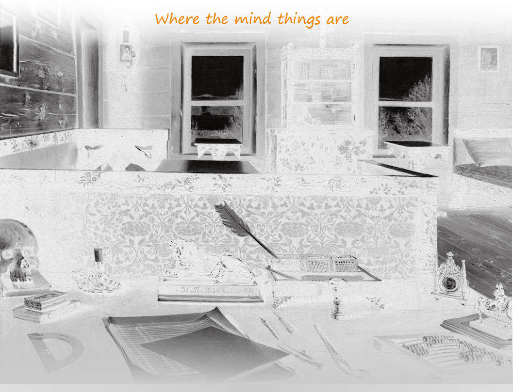

|  |
Mental Work |
What does it practically means - business practice based on knowledge and expertise?
That is when then most critical business processes are driven by expertise and mental work become critical for business.
This means live mental work and does not mean fossilized in form of hardware and software wich can processed terrabytes of information out of mind.
This is the case then information tehcnologies should be an ecosystem for thinking, growing expertise and knowledge in minds.
We define this technological environment of mental work as a mentalware.
The main stage of mentalware life cycle is a mental work of thinkers.
Mentalware is used as a source and canvas for thinking and reproduced during mental work as a new print of expertise and practice for further usage.
Mental Workflow is structured with Thesaurus on the top and traced with Logfiles on the base of process.
Certainly we stratify not a mental work by itself but model view of this process.
Using this approach we can improve efficiency of a real mental work of thinkers that is critical in expertise-driven business processes. So, here and below "mental work" means this model.
On the top of mental work all concepts and semantic are collected into Thesaurus in order to structurized all the rest information and increase it is conducting power to mind. Mind maps are a good sample and visualization form for Thesaurus.
On the base of mental work all content and meida are collected into Log in order to have arguments and data to support concepts and make decisions.
In the middle of mental work we assumes a Workflow - the main mind process in time, consisting of decision making based on logic of existance, empiric facts and calculations.
Workflow structured with terms and background from thesaurus (existance logic skeleton) and filled with log content (practice body).The loop of mentalware cycle is rolling around mental work and consists of the following stages:
Expression - this is the combination of terms (with backgrounds). Expression can be treated as guideline to percept or analyze object or fact needed to express another entity. This make mentalware expression similiar to mathematical expression.
As well as computing expression terms of mentalware have associated value that they return after thinking. This value is formal sign used to control workflow.
Each mentalware expression should be a thought as uttering in regular language.